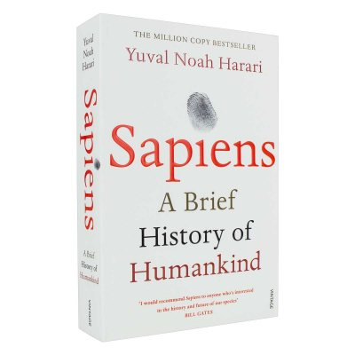

|  |
SAPIENS: A Brief History of Humankind USD$10.000 From a renowned historian comes a groundbreaking narrative of humanity’s creation and evolution—a #1 international bestseller—that explores the ways in which biology and history have defined us and enhanced our understanding of what it means to be “human.” One hundred thousand years ago, at least six different species of humans inhabited Earth. Yet today there is only one—homo sapiens. What happened to the others? And what may happen to us? Most books about the history of humanity pursue either a historical or a biological approach, but Dr. Yuval Noah Harari breaks the mold with this highly original book that begins about 70,000 years ago with the appearance of modern cognition. From examining the role evolving humans have played in the global ecosystem to charting the rise of empires, Sapiens integrates history and science to reconsider accepted narratives, connect past developments with contemporary concerns, and examine specific events within the context of larger ideas. Dr. Harari also compels us to look ahead, because over the last few decades humans have begun to bend laws of natural selection that have governed life for the past four billion years. We are acquiring the ability to design not only the world around us, but also ourselves. Where is this leading us, and what do we want to become? Featuring 27 photographs, 6 maps, and 25 illustrations/diagrams, this provocative and insightful work is sure to spark debate and is essential reading for aficionados of Jared Diamond, James Gleick, Matt Ridley, Robert Wright, and Sharon Moalem. |

|
HOMO DEUS: A Brief History of Tomorrow USD$10.000 Yuval Noah Harari, author of the critically-acclaimed New York Times bestseller and international phenomenon Sapiens, returns with an equally original, compelling, and provocative book, turning his focus toward humanity’s future, and our quest to upgrade humans into gods. Over the past century humankind has managed to do the impossible and rein in famine, plague, and war. This may seem hard to accept, but, as Harari explains in his trademark style—thorough, yet riveting—famine, plague and war have been transformed from incomprehensible and uncontrollable forces of nature into manageable challenges. For the first time ever, more people die from eating too much than from eating too little; more people die from old age than from infectious diseases; and more people commit suicide than are killed by soldiers, terrorists and criminals put together. The average American is a thousand times more likely to die from binging at McDonalds than from being blown up by Al Qaeda. What then will replace famine, plague, and war at the top of the human agenda? As the self-made gods of planet earth, what destinies will we set ourselves, and which quests will we undertake? Homo Deus explores the projects, dreams and nightmares that will shape the twenty-first century—from overcoming death to creating artificial life. It asks the fundamental questions: Where do we go from here? And how will we protect this fragile world from our own destructive powers? This is the next stage of evolution. This is Homo Deus. With the same insight and clarity that made Sapiens an international hit and a New York Times bestseller, Harari maps out our future. |

|
21 LESSONS for the 21 Century USD$10.000 How do computers and robots change the meaning of being human? How do we deal with the epidemic of fake news? Are nations and religions still relevant? What should we teach our children? Yuval Noah Harari’s 21 Lessons for the 21st Century is a probing and visionary investigation into today’s most urgent issues as we move into the uncharted territory of the future. As technology advances faster than our understanding of it, hacking becomes a tactic of war, and the world feels more polarized than ever, Harari addresses the challenge of navigating life in the face of constant and disorienting change and raises the important questions we need to ask ourselves in order to survive. In twenty-one accessible chapters that are both provocative and profound, Harari builds on the ideas explored in his previous books, untangling political, technological, social, and existential issues and offering advice on how to prepare for a very different future from the world we now live in: How can we retain freedom of choice when Big Data is watching us? What will the future workforce look like, and how should we ready ourselves for it? How should we deal with the threat of terrorism? Why is liberal democracy in crisis? Harari’s unique ability to make sense of where we have come from and where we are going has captured the imaginations of millions of readers. Here he invites us to consider values, meaning, and personal engagement in a world full of noise and uncertainty. When we are deluged with irrelevant information, clarity is power. Presenting complex contemporary challenges clearly and accessibly, 21 Lessons for the 21st Century is essential reading. |